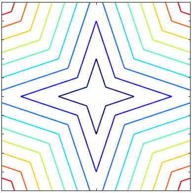
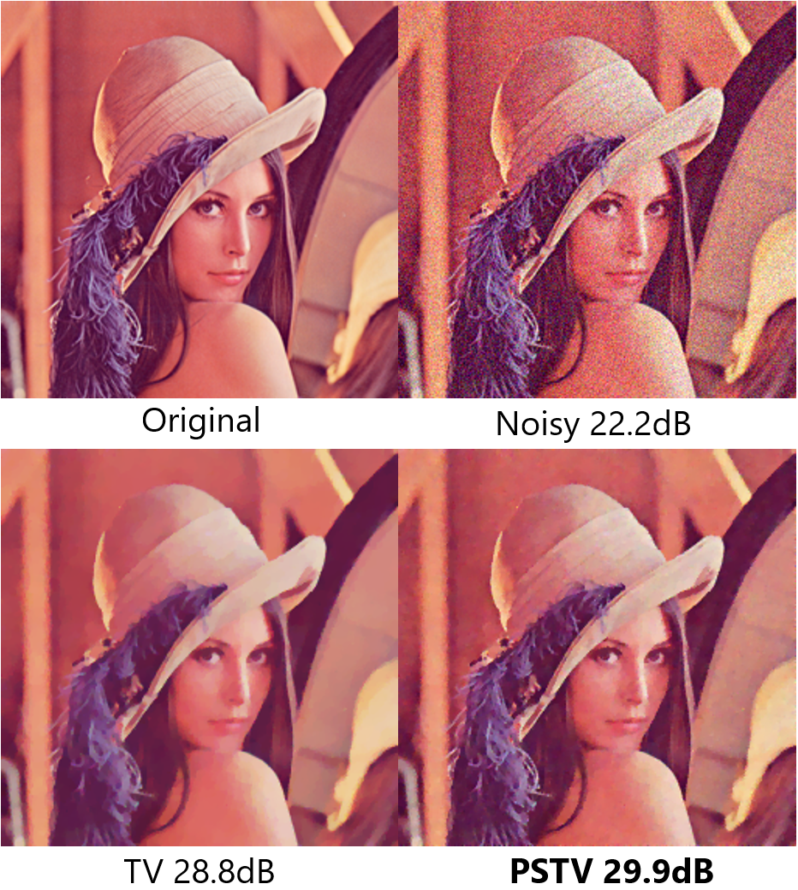

1987年大阪生まれ、大学院（修士）修了まで大阪在住。 夏期インターンシップでNTTコミュニケーション科学基礎研究所（神奈川県厚木市）に行き，自由な気風と高い研究レベルに憧れて就職を決意。
NTTに就職後は6ヶ月間NTTドコモ九州（福岡県福岡市）へ研修に行き，携帯電話販売に従事。 その後NTT横須賀研究開発センタ（神奈川県横須賀市）にて本格的に研究活動を開始。
2023年4月より東京工業大学の博士課程学生。 IEEEおよび電子情報通信学会の会員。
グラフネットワーク上に定義された数値列を取り扱うグラフ信号処理は， 従来の古典的信号処理では取り扱えなかった数値間の複雑な関係性を， 数理的に扱うための道筋を示してくれます。
中でもグラフフーリエ変換は強力なツールであり， グラフ信号の周波数解析が行えるだけでは無く， 雑音除去やスペクトルクラスタリング等，様々なグラフ信号処理を達成するために必要不可欠です。 しかしながら古典的信号処理のような高速演算（高速フーリエ変換；FFT）を 行うには，グラフの構造に制約を課す必要があります。
我々はグラフフーリエ変換が高速に算出できる，グラフの直積構造に大きく関心を寄せています。 複数の因子グラフの直積からなるグラフ\(\mathcal {G}=\mathcal {G}_1 \square \mathcal {G}_2 \square \cdots \square \mathcal {G}_D\)では， ラプラシアン行列\(\mathbf {L}\)が因子グラフのラプラシアン行列\(\mathbf {L}_i\)のクロネッカー和で表されます。 \[ \mathbf {L} = \mathbf {L}_1 \oplus \mathbf {L}_2 \oplus \cdots \oplus \mathbf {L}_D \] これより，ラプラシアン行列\(\mathbf {L}\)の固有値分解\(\mathbf {L} = \mathbf {U} \boldsymbol {\Lambda } \mathbf {U}^* \)が \[ \boldsymbol {\Lambda } = \boldsymbol {\Lambda }_1 \oplus \boldsymbol {\Lambda }_2 \oplus \cdots \oplus \boldsymbol {\Lambda }_D \] \[ \mathbf {U} = \mathbf {U}_1 \otimes \mathbf {U}_2 \otimes \cdots \otimes \mathbf {U}_D \] により求まります。 グラフフーリエ変換は行列\(\mathbf {U}^*\)による線形変換であるので， グラフ信号に対して\(\mathbf {U}_i\)の乗算を合成することで高速なグラフフーリエ変換を構築することができます．
データや物理現象に潜在するスパース性/低ランク性をモデル化するために， 多くの研究者達はL1ノルム/核型ノルムを使用してきました。 しかし解析対象が持つ多様な先験情報を定式化するためには， これらのノルムは十分な表現力を持っていないと考えています。
そこでスパース性の新しい正則化関数である尖星準ノルムや，非凸型低ランク正則化関数の加重核型ノルムを用いることで， 信号のスパース性/低ランク性をより柔軟に定式化します。 また，これら正則化関数を用いた最適化問題を解く鍵となる近接写像について，高速な計算方法を検討します。
例えば全変動(Total Variation;TV)を尖星準ノルムにより拡張した尖星全変動(Pointed Star Total Variation; PSTV)による正則化問題は、以下の数式で表されます。 \[ \min _{\mathbf {x}\in \mathbb {R}^N} \dfrac {1}{2} \| \mathbf {y} - \mathbf {Ax} \|_2^2 + \Omega _{\mathbf {w}}( \mathbf {Dx} ) \] ここで\(\Omega _{\mathbf {w}}( \mathbf {x} )\)は尖星準ノルムで、重みベクトル\(\mathbf {w} \)と、 \(\mathbf {x}\)の各要素の絶対値を降順に並べたベクトル\( |\mathbf {x} |_{\downarrow }\)との 内積として定義されます。 \[ \Omega _{\mathbf {w}}( \mathbf {x} ) = \langle \mathbf {w}, | \mathbf {x} |_{\downarrow } \rangle \] 尖星準ノルムはL1ノルムとL0ノルムの拡張であり、L1ノルムよりも強い正則化性能を持ちながらL0ノルム制約問題よりも高速に最適化問題が解けるという性質があります。
尖星全変動を画像正則化関数として用いることで、雑音除去や超解像など様々な画像処理タスクを解くことができます。


境界情報や輪郭情報，3Dモデルなどは，多くの頂点が辺によって結ばれるグラフとして定義することができます。 グラフは情報量が多いほど詳細に対象を表現できる一方で，表現やデータ処理に使わない冗長な情報は削減されることが望ましいです。
そこで核型ノルム正則化に基づいたグラフ単純化処理を施し，グラフの重要な情報をできる限り保ちながら， 情報量を削減する方法を提案します。
また，上記処理の計算時間上のボトルネックであった特異値閾値処理について，高速な計算方法を提案します。
従来の映像符号化技術は波形の忠実再現を目標として研究開発され，標準化が進められてきました。 これは大いに成功し，今日のテレビ放送やビデオストリーミングに欠かせない重要技術となっています。
映像符号化の次のステップは，被写体の持つ材質感や場の空気感などを含む，質感の伝送/制御が重要であると考えています。
質感を伝送/制御するために，信号分解をベース技術とする質感映像符号化方式を提案し， 次世代映像符号化方式に寄与することを目指しています。

「信号処理」を核にして、以下を得意としています。


佐々木崇元, 谷田隆一, 清水淳, “Texture 合成符号化における非合成領域決定法の検討,” 電子情報通信学会論文誌 D, vol. 99, no. 9, pp. 865–867, 2016, [link].
T. Sasaki, R. Tanida, M. Kitahara, and H. Kimata, “Fast-parallel singular value thresholding for many small matrices based on geometric feature of singular values,” in 2021 Asia-Pacific Signal and Information Processing Association Annual Summit and Conference (APSIPA ASC), [link], 2021, pp. 1–8.
T. Sasaki, M. Nakashizuka, and Y. Iiguni, “Audio signal recovery from random sampling with sparsity prior on frequency spectrum,” in International Technical Conference on Circuits/Systems, Computer and Communications (ITC-CSCC), 2011, pp. 447–450.
佐々木崇元, 坂東幸浩, 北原正樹, “高速グラフフーリエ変換に基づくグラフ信号雑音除去の高速化と画像応用に関する一検討,” in 電子情報通信学会技術研究報告, vol. 122, 電子情報通信学会, 2023, pp. 11–16.
佐々木崇元, 坂東幸浩, 北原正樹, “加重核型ノルム正則化に基づくグラフ単純化,” in 第21回 情報科学技術フォーラム (FIT), 第3分冊, 2022, pp. 101–108.
佐々木崇元, 坂東幸浩, 北原正樹, “高速グラフフーリエ変換に基づくグラフ信号雑音除去の高速化,” in 第37回 信号処理シンポジウム講演論文集, 電子情報通信学会信号処理研究専門委員会, 2022, pp. 432–437.
佐々木崇元, 坂東幸浩, 北原正樹, “尖星全変動正則化に基づくグラデーションとエッジ同時制御可能なエッジ保存平滑化,” in 第36回 信号処理シンポジウム講演論文集, 電子情報通信学会信号処理研究専門委員会, 2021, pp. 181–186.
佐々木崇元, 谷田隆一, 木全英明, “高速逆数平方根によるFast Multiple特異値閾値処理の高速化,” in 電子情報通信学会技術研究報告, [link], vol. 120, 電子情報通信学会, 2021, pp. 230–234.
佐々木崇元, 北原正樹, 清水淳, “低ランク最適化のための高速特異値閾値処理の数理,” in 第16回 情報科学技術フォーラム (FIT), 第1分冊, [link], 2017, pp. 5–12.
佐々木崇元, 北原正樹, 清水淳, “領域情報符号化における核型ノルム最適化の高速計算法,” in 第31回 画像符号化シンポジウム (PCSJ), 2016, pp. 140–141.
佐々木崇元, 谷田隆一, 清水淳, “グラフ信号の局所線形近似によるグラフ形状単純化,” in 第15回 情報科学技術フォーラム (FIT), 第3分冊, [link], 2016, pp. 1–4.
佐々木崇元, 谷田隆一, 清水淳, “Texture合成符号化における非合成領域決定法の検討,” in 第30回 画像符号化シンポジウム (PCSJ), 2015, pp. 48–49.
佐々木崇元, 谷田隆一, 清水淳, “コントラスト不変性に基づく着目領域のTV-L1画像分解高速化,” in 第14回 情報科学技術フォーラム (FIT), 第3分冊, [link], 2015, pp. 235–236.
佐々木崇元, 谷田隆一, 清水淳, “信号分解とTexture合成に基づく符号化方式の検討,” in 電子情報通信学会総合大会講演論文集, [link], 電子情報通信学会, 2015, p. 44.
佐々木崇元, 中静真, 飯國洋二, “スパースペナルティを課した信号識別モデルによるスパース周期信号分解,” in 第27回 信号処理シンポジウム講演論文集, 電子情報通信学会信号処理研究専門委員会, 2012, pp. 385–390.
佐々木崇元, 中静真, 飯國洋二, “周波数スペクトルのスパース性に基づくランダムサンプリングからの音響信号復元,” in 電子情報通信学会総合大会講演論文集, [link], 電子情報通信学会, 2011, p. 83.
佐々木崇元, 中静真, 飯國洋二, “周波数スペクトル上スパース性を用いたランダムサンプリングからの音響信号復元,” in 第5回関西地区信号処理とその応用研究会, 2011.